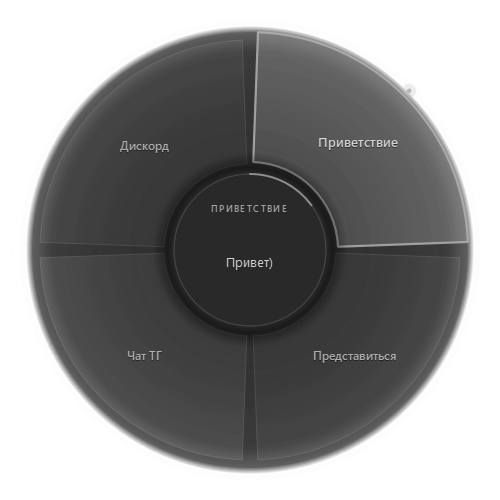

01
Не открывать лишнего
Колесо появляется поверх активного окна. Ни переключений, ни вкладок, ни поиска по заметкам.
QMessages · Metal · Windows
Заготовки для переписки в радиальном меню. Зажал — выбрал — отпустил, и текст уже в поле ввода. Telegram, Discord, браузер, почта — без переключения окон.
Сборка без цифровой подписи: SmartScreen может спросить подтверждение. «Подробнее» → «Выполнить в любом случае».

Настройки, редактор и само колесо. Всё в одной тёмно-серой палитре Metal — той же, что и в приложении.
01 / 08 · Интерфейс
Переписка состоит из повторов. «Привет», «спасибо», «секунду, я сейчас», ссылка на чат. Каждый раз — открыть заметки, найти шаблон, скопировать, вернуться. QMessages убирает эту паузу: одно удержание, один сектор, один вдох.
Принцип QMessages
01
Колесо появляется поверх активного окна. Ни переключений, ни вкладок, ни поиска по заметкам.
02
Шестнадцать заготовок, короткая подпись и полный текст. Редактор вместо ручной правки JSON.
03
Ни аккаунтов, ни облака, ни телеметрии. Только локальный файл настроек на твоём компьютере.
Восемь вещей, за которые отвечает QMessages. Остальное остаётся твоим приложениям.
03 / 08 · Восемь пунктов
Зажал бинд — меню появилось там, где курсор. До 16 секторов, мягкая подсветка выбора и превью текста в центре.
CapsLock по умолчанию. В настройках — Ctrl+Alt+Space, Alt+`, F8 или боковая кнопка мыши. Бинд ловится глобально.
Подпись на колесе и полный текст сообщения. Добавить, удалить, поднять, опустить — без правки файлов руками.
Ctrl+V в активное поле или посимвольный ввод, если приложение блокирует буфер. Enter после вставки — по желанию.
Скопировал текст → трей → «Сохранить из буфера» → Ctrl+S. Подпись подставится из начала текста автоматически.
Архив, папка, exe. Python и Qt уже внутри, установка не нужна. Настройки живут в AppData и переживают перезапуск.
Тёмно-серая палитра один в один с приложением: спокойные панели, градиентные кнопки, ничего кричащего.
Заготовки, буфер и хоткеи не покидают компьютер. Сеть приложению не нужна — как и аккаунт.
Наведи курсор на сектор — в центре появится текст. Кликни, чтобы вставить его в поле. Это упрощённая копия интерфейса, а не настоящий чат.
04 / 08 · Интерактив
Hold · Aim · Release
Поле вводаВыбери сектор слева — текст появится в поле. Потом нажми «отправить».
Windows 10/11 x64. Python нужен только для запуска из исходников — готовая сборка уже содержит всё необходимое.
05 / 08 · Релиз 1.0
62CDF7315B8C5A34236290F507F4810A198AC851F6A4DCD4B7D2118A9FC57E9C
Архив не подписан, поэтому Windows может показать «Неизвестный издатель». Это нормально для сборки без платного сертификата. Конфиг создаётся при первом запуске в %APPDATA%\QMessages.
setup.bat создаст .venv и поставит зависимости, build.bat соберёт портативную папку.
# PowerShell
git clone https://github.com/Awaynos/QMessages.git
cd QMessages
setup.bat
start.bat%APPDATA%\QMessages\config.jsonЕсли ответа нет — открой issue на GitHub. Ошибки и идеи одинаково полезны.
06 / 08 · FAQ
%APPDATA%\QMessages\config.json. Он создаётся при первом запуске. Чтобы перенести настройки на другой компьютер, скопируй этот файл.QMessages разрабатываю я, Awaynos. До него я сделал QTranslate-R — обе программы выросли из одного принципа: локальный инструмент, который решает одну задачу и не мешает остальному.
Без аккаунтов, подписок и облака. Скачал, распаковал, назначил клавишу — и забыл, что оно есть, пока снова не понадобится написать «привет».
Люблю, когда вместо 10 действий можно сделать одно и повысить свой КПД.Awaynos
Переводчик для Windows с тем же характером: глобальный хоткей, компактное окно и никакой лишней инфраструктуры.
Открыть сайтСкачивать и пользоваться — бесплатно. Если хочется отблагодарить, вот адреса. Если нет — звезда на GitHub и хороший баг-репорт тоже помогают.
08 / 08 · Поддержка
Самый простой способ помочь проекту заметить.
Ошибка, идея или неудобный сценарий — всё пригодится.
bc1qfaylkgnwct052snamqmnxl3uk26xpt5jg344fs0x44628629c1C6f8E8591d4f93735Ff6CD70DC8AfC0x44628629c1C6f8E8591d4f93735Ff6CD70DC8AfC3sTNRxJqATsJsKWyM5dxi4HHMLEKbp8f8dGU4wJ1xmE9Отправляй перевод только в указанной сети — иначе средства могут потеряться. Поддержка полностью добровольна.